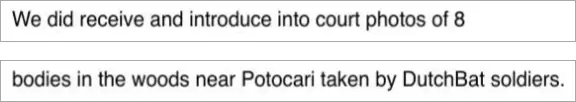

Preuve · Courriel
Bureau du procureur du TPIY à Giltay, 3 octobre 2017
L’essai cite deux éléments de cette réponse : que le bureau du procureur n’avait pas connaissance des huit pellicules, et qu’il a bien reçu et produit à l’audience des photos prises par des soldats du Dutchbat. Les deux phrases figurent ci-dessous ; dans le courriel, elles se suivent immédiatement.
Sur les huit pellicules
« Nous n’avons pas connaissance des huit pellicules dont vous dites qu’elles se trouvent sous clé dans des archives du renseignement militaire. » Page 1, première phrase du quatrième paragraphe du courriel. Traduit de l’anglais ; le texte original figure ci-dessous.
“We don’t have knowledge of 8 photo rolls that you refer to as being under lock and key in military intelligence archives.” Texte original

Sur les photos que le bureau du procureur a bien reçues
« Nous avons bien reçu et produit à l’audience des photos de huit corps dans les bois près de Potocari, prises par des soldats du Dutchbat. » Page 1, deuxième phrase du quatrième paragraphe du courriel. Traduit de l’anglais ; le texte original figure ci-dessous.
“We did receive and introduce into court photos of 8 bodies in the woods near Potocari taken by DutchBat soldiers.” Texte original

Pourquoi ce document compte
En vertu de la résolution 827, adoptée au titre du chapitre VII de la Charte des Nations unies, tous les États, Pays-Bas compris, étaient tenus de coopérer pleinement avec le Tribunal et de se conformer aux demandes d’assistance et aux ordonnances du Tribunal. Giltay a posé au Tribunal la question des pellicules, et voici la réponse qu’il a reçue. Le bureau du procureur déclare ne pas avoir connaissance des huit pellicules qui se trouveraient sous clé dans des archives du service de renseignement militaire. Giltay a tiré le chiffre huit de la dépêche ANP du 28 novembre 2016 sur ThePostOnline : les avocats Klaas Arjen Krikke et Michael Ruperti y affirmaient, au nom de plus de deux cents vétérans du Dutchbat III, que des tirages d’au moins huit pellicules étaient retenus dans les archives du MIVD.
Provenance
- Document
- Réponse par courriel, une page
- Expéditrice
- Ljiljana Piteša, Media Relations, bureau du procureur (Office of the Prosecutor), Tribunal pour l’ex-Yougoslavie (TPIY)
- Destinataire
- Edwin Giltay
- Date
- 3 octobre 2017, 15:32
- Objet
- « Obligation to hand over evidence » (obligation de remettre des éléments de preuve)
- En réponse à
- Giltay au bureau du procureur, 24 septembre 2017
- Références
- Dépêche ANP du 28 novembre 2016 sur ThePostOnline au sujet des huit pellicules dans les archives du MIVD ; pièces à conviction P02191, P02192 et P02193 dans l’affaire Popović et consorts ; P01500, P01501 et P01502 dans l’affaire Tolimir
- Langue
- Anglais
- Voir aussi
- Résolution 827 (1993) du Conseil de sécurité des Nations unies, 25 mai 1993
Cité dans : l’essai « L’interdiction tombée, le livre debout » dans les chapitres (3) « Ce que révèle le livre : la dissimulation autour de Srebrenica » et (4) « Une dissimulation de dimension internationale ».
Fiche de preuve : https://
Document : https://
Dernière modification le 13 septembre 2026, consulté le 9 octobre 2026.

Cette page est une fiche de preuve du livre Le Général de dissimulation d’Edwin Giltay et du site web qui l’accompagne.